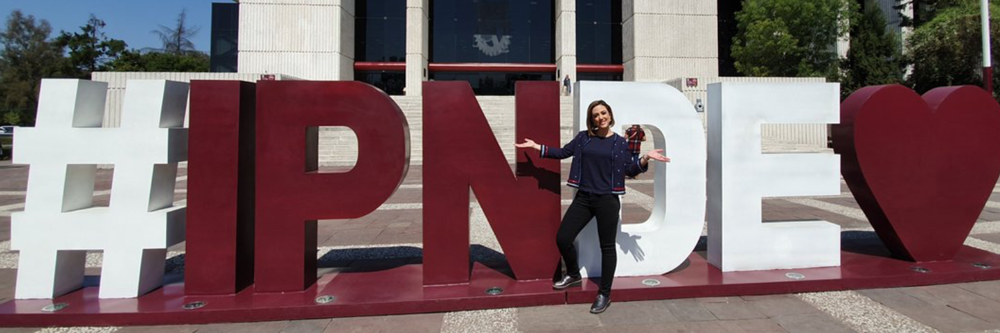

CENDIs

Nuestro objetivo es coordinar a los Centros de Desarrollo Infantil a fin de que provean a los niños y las niñas las condiciones necesarias para su desarrollo integral y adaptación al ambiente familiar, escolar y social mediante la formación de hábitos y actitudes deseables que lo habiliten como un ser seguro de sí mismo, para lograr que las madres trabajadoras desempeñen las labores propias del puesto asignado con la tranquilidad de que su hijo e hija está en un lugar adecuado.
La Coordinación de Centros de Desarrollo Infantil es una entidad que ofrece un servicio educativo integral a los hijos e hijas de las trabajadoras del Instituto Politécnico Nacional hasta la edad preescolar, mediante los programas educativos vigentes que promuevan en los niños y las niñas sus competencias cognoscitivas, sociales, afectivas y los valores, dentro de un ambiente de calidad y calidez, bajo principios de eficiencia y transparencia.
Que los Centros de Desarrollo infantil del Instituto Politécnico Nacional brinden un servicio educativo integral y de excelencia a la población infantil inscrita, que asegure la formación de los niños y las niñas como individuos más competitivos, seguros y autónomos, acorde a los nuevos modelos educativos de educación inicial y preescolar, así como el manejo de procesos eficientes, simplificados y en continuo mejoramiento; logrando que las madres trabajadoras se desempeñen en un ambiente de tranquilidad.
Ofrecemos un servicio educativo integral a los hijos e hijas de las trabajadoras del Instituto Politécnico Nacional hasta la edad preescolar, mediante los programas educativos vigentes que promuevan en los niños y las niñas sus competencias cognoscitivas, sociales, afectivas y los valores, dentro de un ambiente de calidad y calidez, bajo principios de eficiencia y transparencia.
Los CENDI responden como espacios educativos que poseen identidad propia y una vida caracterizada por la misión institucional y la de cada plantel, centrada en la atención integral del desarrollo, la formación y los aprendizajes del alumnado.
Servicio encargado de coordinar y supervisar la recepción, la elaboración y la ministración de alimentos para los niños y niñas de los Centros de Desarrollo Infantil.
Servicio encargado de supervisar y asesorar que, mediante las acciones odontopreventivas, se logre preservar la salud bucodental de las niñas y los niños de los centros de desarrollo infantil.
Servicio encargado de verificar y promover los programas de prevención de salud y las actividades de hábitos de higiene que se aplican en los CENDI que favorezcan la salud de la comunidad infantil.
Servicio encargado de supervisar, asesorar y evaluar los programas pedagógicos vigentes con estrategias de aprendizaje para lactantes, maternales y preescolares en un ambiente educativo de calidad que, centrados en los procesos de desarrollo infantil, promuevan la estimulación óptima de sus competencias, logrando niñas y niños seguros, autosuficientes y con valores
Servicio encargado de supervisar y evaluar las actividades que favorecen y fortalecen el desarrollo y la personalidad de las niñas y niños, en un ambiente inmerso de afectividad, seguridad y confianza, a través de criterios técnicos y programas preventivos que facilitan un trabajo colegiado, para promover un óptimo desarrollo integral de las niñas y niños.
Servicio encargado de llevar a cabo las acciones conforme a la normatividad para el otorgamiento de ingreso de las hijas e hijos de las trabajadoras y trabajadores del IPN a los Centros de Desarrollo Infantil, así como supervisar y asesorar las actividades del área de trabajo social para el logro de los objetivos.
Directora del CENDI: Lic. Elena Victoria Peraza Cabrera.
Ubicación: Oroya No. 760, Col. Lindavista, Alcaldía Gustavo A. Madero, C.P. 07300.
Fecha de inauguración del CENDI: Septiembre de 1981.
Directora del CENDI : Lic. Socorro Nieves Oliver
Ubicación: Sierravista s/n Esq. Av. IPN, Col. Lindavista, Alcaldía: Gustavo A. Madero, C.P. 07300
Fecha de inauguración del CENDI: Noviembre de 1982.
Directora del CENDI “Eva Sámano de López Mateos”
Ubicación: Av. José Loreto Fabela s/n Esq. Av. 506 Unidad San Juan de Aragón, Alcaldía Gustavo A. Madero, C.P. 07950
Fecha de inauguración: 30 Septiembre de 1981.
Directora del CENDI “Laura Pérez de Bátiz”
Ubicación: Plan de Agua Prieta No.66 Esq. Calz. de los Gallos. Col. Plutarco Elías Calles, Alcaldía Miguel Hidalgo, C.P. 11350.
Fecha de inauguración: 1956.

Directora del CENDI “Margarita Salazar de Erro”
Ubicación: Prolongación Carpio s/n Esq. Plan de San Luis. Col. Casco de Santo Tomás, Alcaldía Miguel Hidalgo, C.P. 11340
Fecha de inauguración: 1° de Noviembre de 1982.